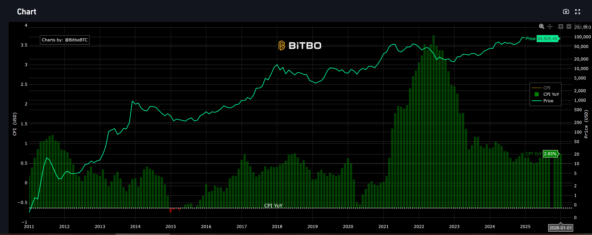
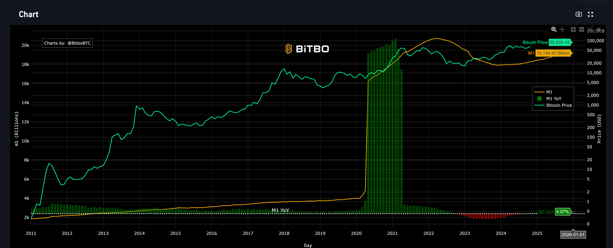

看懂宏觀，才真正看懂比特幣。本文以 7 張來自 FRED 的核心宏觀數據圖表為基礎，幫你建立屬於你自己的宏觀鷹架角度。
1 U.S. CPI vs Bitcoin 通膨預期與抗通膨屬性
消費者物價指數年同比 (CPI YoY) 衡量的是一籃子日常消費品（食物、住房、交通、醫療等）在過去 12 個月的整體漲幅。它不僅是衡量人民實際生活成本的溫度計，更是決定聯準會貨幣政策走向的最核心數據。
影響鏈邏輯：CPI → 聯準會政策 → 流動性 → BTC 定價
這條邏輯鏈是破解幣價走向的第一把鑰匙。當 CPI 持續高於聯準會 2% 的目標值，聯準會被迫升息以冷卻需求、抑制通膨。升息意味著資金成本上升——借貸更昂貴、定存更吸引人，資金從高風險資產外流回到固定收益市場。比特幣作為「流動性的晴雨表」，在這個過程中首當其衝。反之，當 CPI 穩步回落，市場就會提前押注降息時間表，風險偏好重新點燃，比特幣往往在真正降息前便領先於大盤率先上漲。

圖表判讀與歷史覆盤
圖中最關鍵的區間是 2021 至 2022 年。CPI 從不到 2% 飆升至接近 9%，聯準會被迫以近 40 年最快節奏升息。比特幣的初期反應是上漲（市場誤讀通膨為避險需求），但一旦升息落地、流動性急速收縮，比特幣從 69,000 美元暴跌至 16,000 美元。核心啟示：比特幣的真正敵人不是通膨本身，而是聯準會為了對抗通膨而採取的緊縮手段。
現況與未來推論
目前 CPI 已從峰值大幅回落至 2.5-3% 附近，進入「溫和通膨」區間——這對比特幣是黃金窗口期：聯準會已明確停止升息，降息路徑逐漸開啟，而通膨尚未低到引發通縮擔憂。未來最大的風險是「通膨二次回歸」：若能源、服務業或關稅政策再度推高 CPI 至 4% 以上，聯準會的鷹派聲音將重新主導，比特幣可能面臨 10-30% 的短線回調壓力。反之，若 CPI 繼續向 2% 靠攏，比特幣的長線主升浪才真正確立。
想要更深入了解 CPI 嗎？
查看知識百科中的完整專題解析，掌握通膨週期的底層細節。
2 US Money Supply (M1) 即時流動性的引擎
M1 是最「活性」的貨幣，包含流通中的現金以及可無障礙隨時動用的活期存款。它反映的是市場上「隨時可投入的子彈」有多少，是觀察即時流動性最敏感的指標。
機制解析：M1 擴張如何為比特幣點火？
機制很簡單：當政府大規模發放刺激補貼或聯準會壓低利率鼓勵借貸，M1 快速膨脹，人們手中的活錢增多，儲蓄的機會成本降低，部分資金開始流向高風險高報酬的資產類別。比特幣因其全球開放的交易特性與 24/7 的市場，往往是這股熱錢的第一個停靠站。
